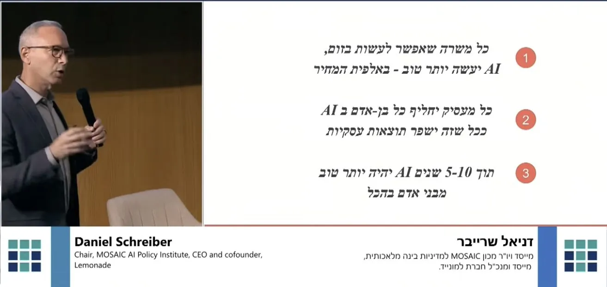

Daniel Schreiber on the speed and scale of AI
Originally posted on LinkedIn, January 1, 2025.
These are 45 minutes that will change how you see what is happening. I am still processing what I saw.
Daniel Schreiber, CEO of Lemonade and chairman of an AI policy research institute, explains in Hebrew the scale and depth of the change AI is bringing. I have not seen it presented this way before. It is not only the depth of the change, but the dizzying speed at which it is happening.
The scale is hard to grasp. It may eclipse the invention of the internet or the smartphone, and it is unfolding in front of us at extraordinary speed. Schreiber covers consequences that are already here, including autonomous vehicles, robots, and new technologies, as well as the machines that will replace us in the near future. He also explains why we struggle to understand exponential growth and how radically it will change our reality.
He discusses the enormous amount of energy required to train AI networks, to the point that commercial companies are buying nuclear power plants.
Schreiber compares us to people living in 1800. They rode horses and grew grain, and they could not imagine that their descendants would become software developers and wedding photographers. We have the same problem understanding how quickly AI networks can learn and surpass us. What takes us years to learn, they can learn in moments, and that knowledge is immediately available across the entire network.
If you want to understand the scale of this event, its consequences, and what lies ahead, watch the lecture.
